Capitolo 6
Ulteriori sviluppi della Teoria
Nella scheda quattro abbiamo introdotto l’equazione di Schrödinger per una particella carica in un potenziale elettrico. Questa equazione ci permette di determinare  , cioè la distribuzione di ampiezze di probabilità in funzione del tempo per la terna di grandezze misurabili
, cioè la distribuzione di ampiezze di probabilità in funzione del tempo per la terna di grandezze misurabili  . Lo scopo centrale della presente scheda sarà quello di determinare la distribuzione di ampiezze di probabilità per altre grandezze osservabili, in particolare per la quantità di moto, per il momento angolare e per l’energia.
. Lo scopo centrale della presente scheda sarà quello di determinare la distribuzione di ampiezze di probabilità per altre grandezze osservabili, in particolare per la quantità di moto, per il momento angolare e per l’energia.
Per raggiungere lo scopo è necessario rivedere e generalizzare i principi della Meccanica Quantistica che abbiamo postulato nella scheda due.
Principi della Meccanica Quantistica.
Per comodità di lettura riportiamo qui i principi che abbiamo postulato nella scheda due:
Un sistema fisico è caratterizzato dalle sue grandezze fisiche che possono essere misurate.
Quando si misura una grandezza g sono possibili diversi risultati, ed ogni risultato ha una certa probabilità di uscire. Se dalla misura si ottiene un particolare risultato  , il sistema si porta in uno stato tale che, se si ripete la misura di g si ottiene con certezza il valore
, il sistema si porta in uno stato tale che, se si ripete la misura di g si ottiene con certezza il valore  . Un tale stato viene detto autostato di g con autovalore
. Un tale stato viene detto autostato di g con autovalore  .
.
Un qualsiasi altro stato ( può essere considerato come una sovrapposizione degli autostati di una grandezza g e può essere rappresentato da un vettore di numeri complessi  . Ogni numero complesso è associato ad uno dei possibili valori che può assumere la grandezza g,
. Ogni numero complesso è associato ad uno dei possibili valori che può assumere la grandezza g,  Il modulo quadrato di ognuno di questi numeri complessi, ad esempio (k, da la probabilità che misurando la grandezza g esca il particolare valore
Il modulo quadrato di ognuno di questi numeri complessi, ad esempio (k, da la probabilità che misurando la grandezza g esca il particolare valore  associato al numero considerato.
associato al numero considerato.
In generale se il sistema si trova in uno stato ( e si misura una grandezza  , la probabilità che esca
, la probabilità che esca
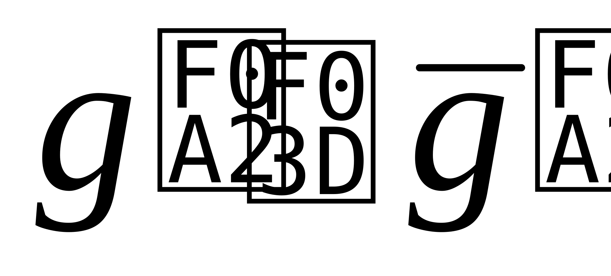
è data dal modulo quadro del prodotto scalare tra il vettore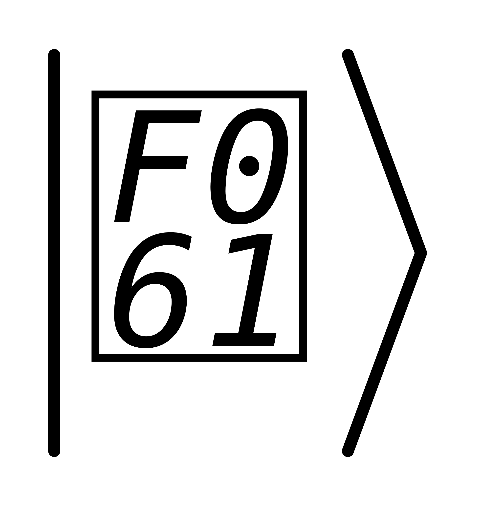
ed il vettore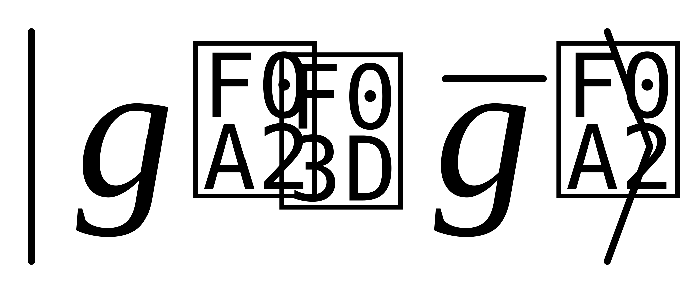
associato all’autostato di
di  .
. 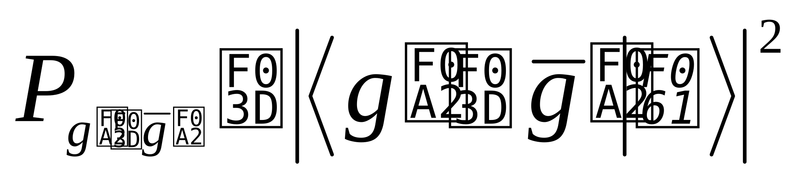
L’evoluzione nel tempo di uno stato (t segue una legge lineare
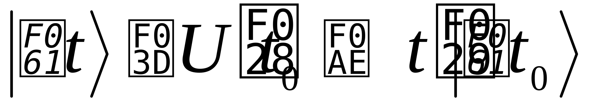
dove  è una matrice che dipende dal sistema e dalle “condizioni ambientali”. La matrice
è una matrice che dipende dal sistema e dalle “condizioni ambientali”. La matrice  è detta matrice di evoluzione temporale e gode della proprietà di lasciare invariati i prodotti scalari
è detta matrice di evoluzione temporale e gode della proprietà di lasciare invariati i prodotti scalari 
Nel secondo principio si introduce il concetto di autostato cioè di uno stato tale che se si esegue una misura si ottiene con certezza un dato valore detto autovalore. Nel caso di una particella materiale gli autostati ad esempio della grandezza x sono quelli rappresentati da vettori del tipo

infatti con questo vettore si ottiene una distribuzione di probabilità che è nulla se , ed è non nulla solo se  , quindi quando si esegue una misura di x si otterrà per forza il valore
, quindi quando si esegue una misura di x si otterrà per forza il valore  . Un altro esempio è dato dallo stato rappresentato dal vettore
. Un altro esempio è dato dallo stato rappresentato dal vettore

in questo caso se si esegue una misura di x, di y o di z, si otterranno con certezza i valori  , e
, e
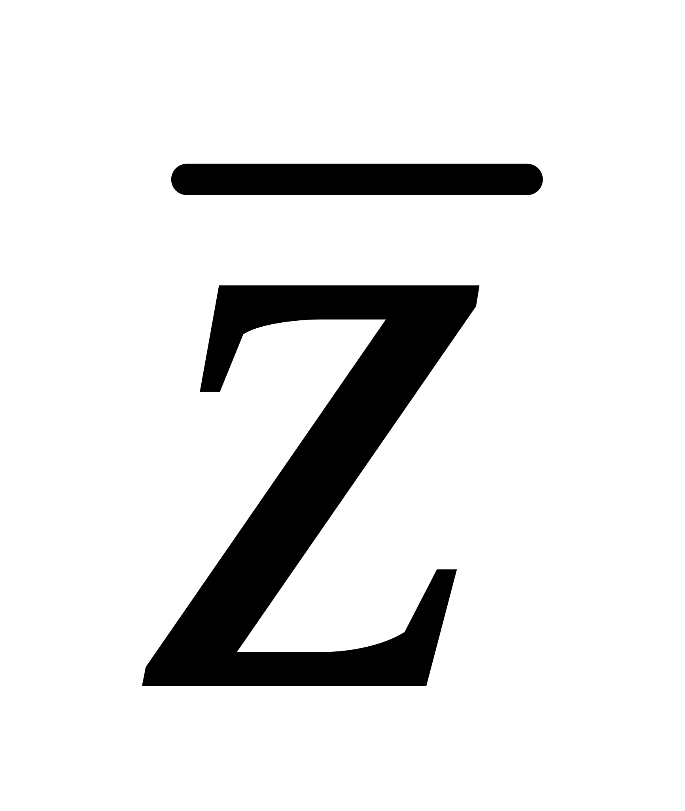
; quindi questo che abbiamo considerato è contemporaneamente un autostato delle grandezze x, y e z.I principi che abbiamo dato in realtà sono una versione semplificata, perché si suppone che dato un valore  l’autostato associato a
l’autostato associato a  sia unico, il ché in generale non è vero; ad esempio nel caso di una particella materiale nello spazio tridimensionale gli autostati associati ad un autovalore
sia unico, il ché in generale non è vero; ad esempio nel caso di una particella materiale nello spazio tridimensionale gli autostati associati ad un autovalore
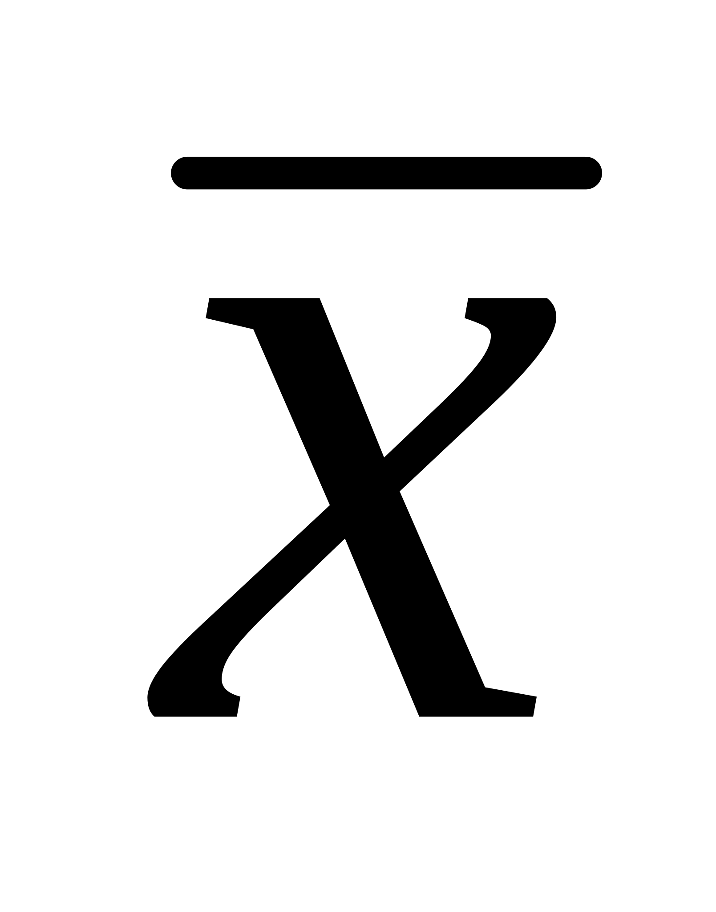
di x sono infiniti:
Quindi non possiamo parlare dello stato
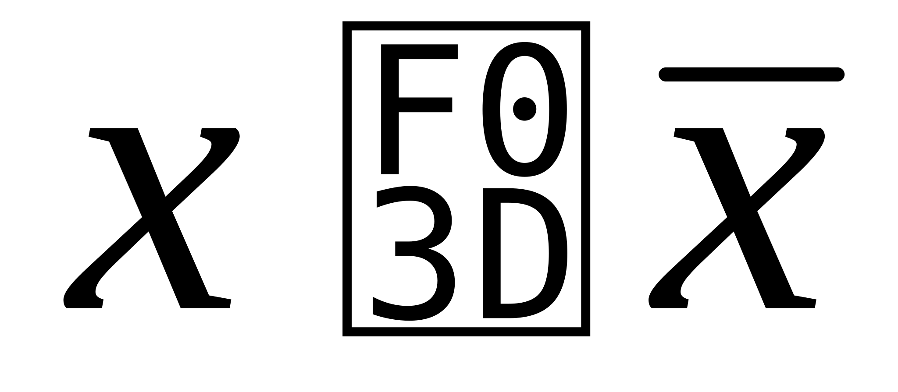
, perché non è uno solo, ma possiamo parlare dello stato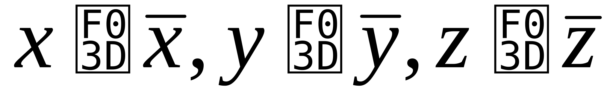
, infatti questo stato è univocamente determinato e la relativa distribuzione di probabilità è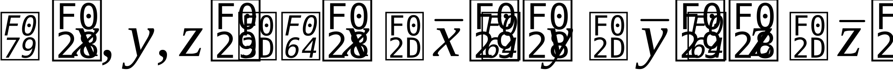
Il terzo principio si deve generalizzare dicendo che un qualsiasi stato può essere considerato come la sovrapposizione degli “autostati simultanei” di un certo set di grandezze fisiche  . I coefficienti di questa sovrapposizione non avranno più un solo indice ma ne avranno tanti quante sono le grandezze osservabili delle quali si prendono gli autostati, quindi non avremo
. I coefficienti di questa sovrapposizione non avranno più un solo indice ma ne avranno tanti quante sono le grandezze osservabili delle quali si prendono gli autostati, quindi non avremo  ma avremo
ma avremo
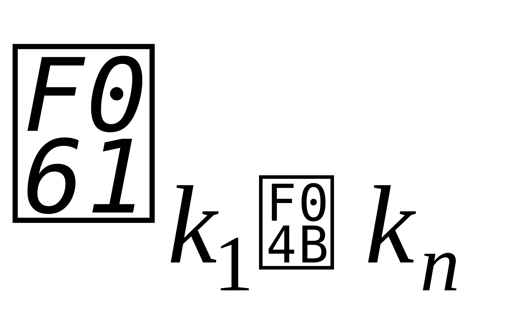
, oppure nel caso continuo non avremo ma avremo
ma avremo  .
.
Un set di grandezze fisiche
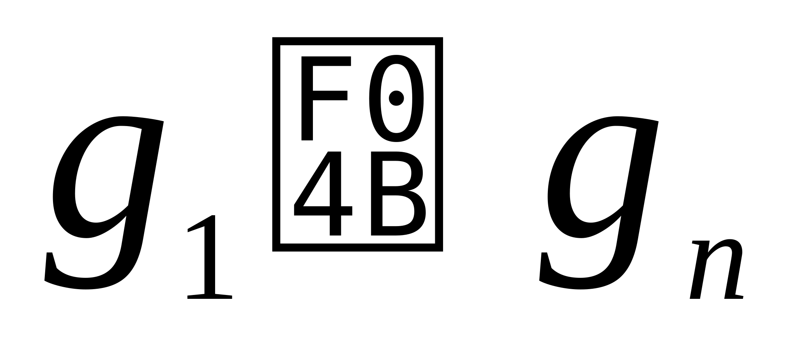
tale che esiste un unico autostato simultaneo associato agli autovalori si dirà “completo”. Ad esempio le tre variabili posizione x, y e z costituiscono un set completo, perché data una terna di valori
si dirà “completo”. Ad esempio le tre variabili posizione x, y e z costituiscono un set completo, perché data una terna di valori 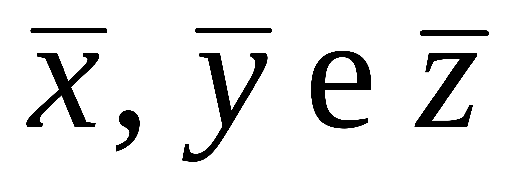
, esiste un unico autostato simultaneo associato a questa terna.Il ket associato allo stato  potrà essere indicato con il simbolo
potrà essere indicato con il simbolo
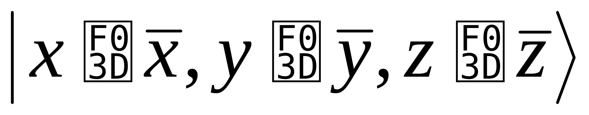
tuttavia preferiremo fare un abuso di notazione e usare una notazione più compatta indicando il ket con il simbolo  . (C’è un abuso di notazione perché se volessimo sostituire dei numeri, ad esempio
. (C’è un abuso di notazione perché se volessimo sostituire dei numeri, ad esempio
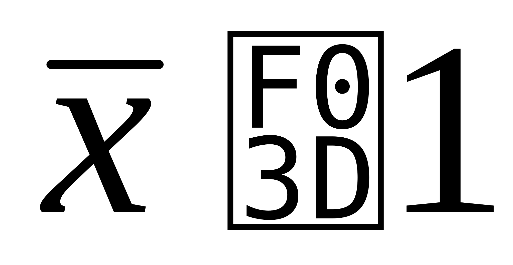
,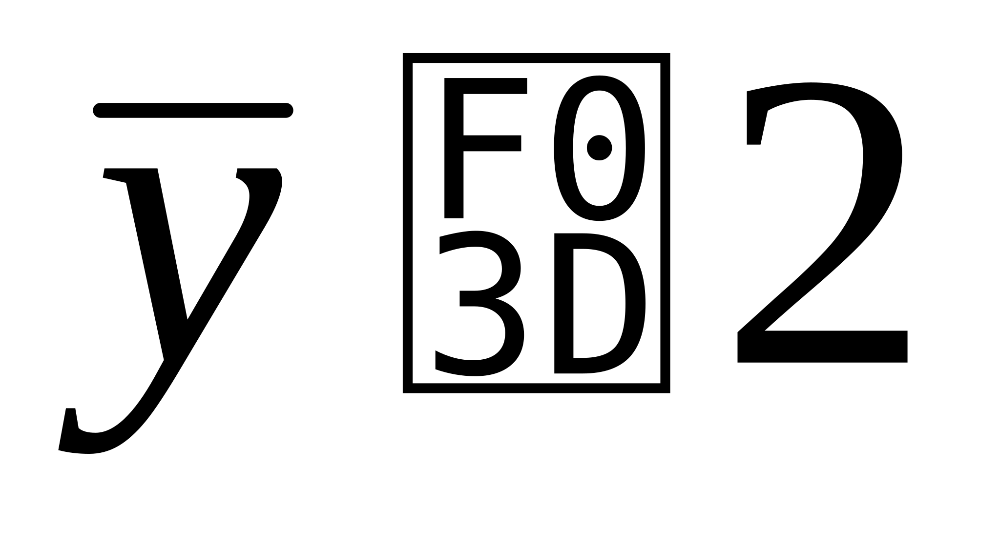
e , avremmo il simbolo nel quale sono indicati dei valori, ma non sono indicate le relative grandezze).
nel quale sono indicati dei valori, ma non sono indicate le relative grandezze).
Ora consideriamo il quarto principio e supponiamo ad esempio di voler calcolare l’ampiezza di probabilità che, misurando x, y e z contemporaneamente su una particella in uno stato
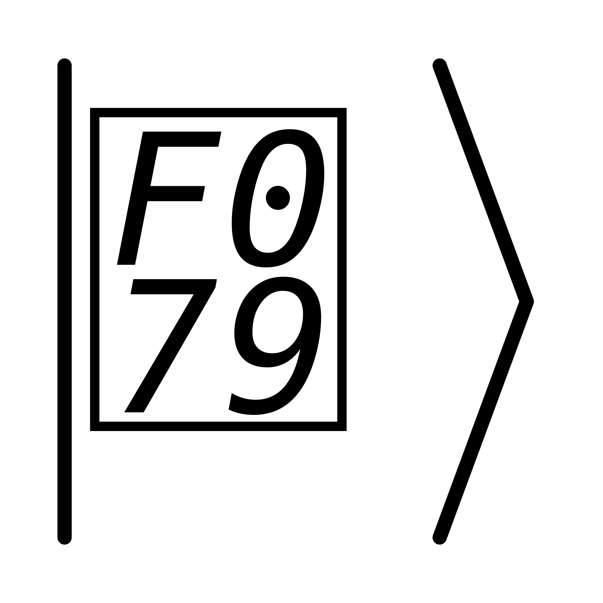
, vengano i valori ; allora l’ampiezza di probabilità cercata è data dal prodotto scalare
; allora l’ampiezza di probabilità cercata è data dal prodotto scalare 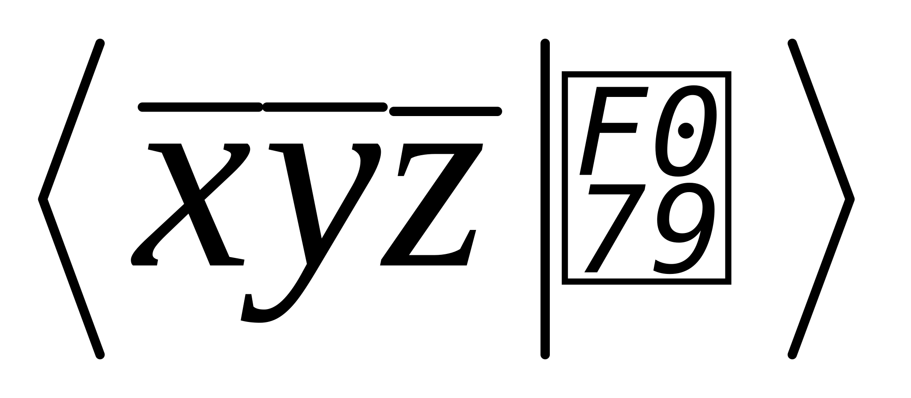
e la probabilità è data dal modulo quadro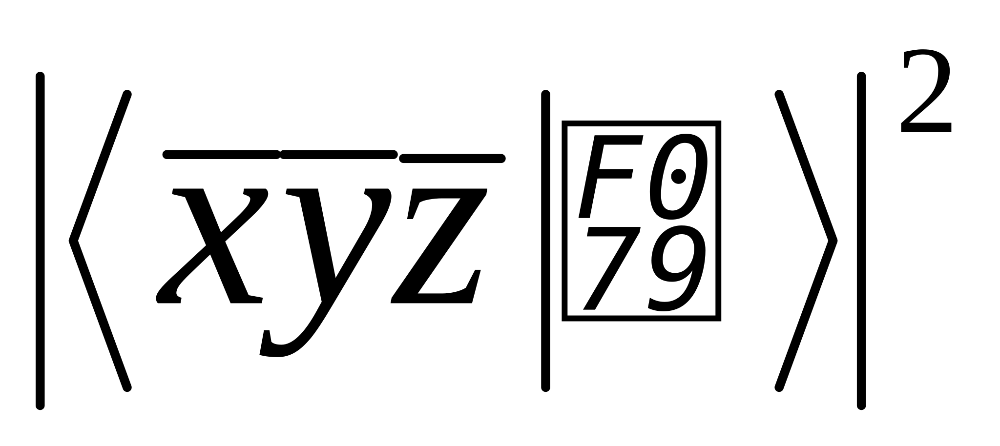
.Ma se vogliamo la probabilità che misurando solo x venga  ? Possiamo scrivere
? Possiamo scrivere
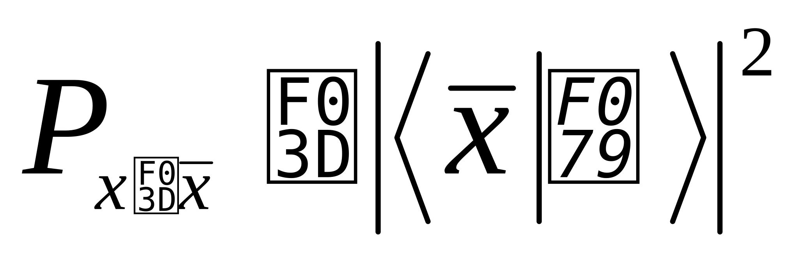
?No, perché il simbolo
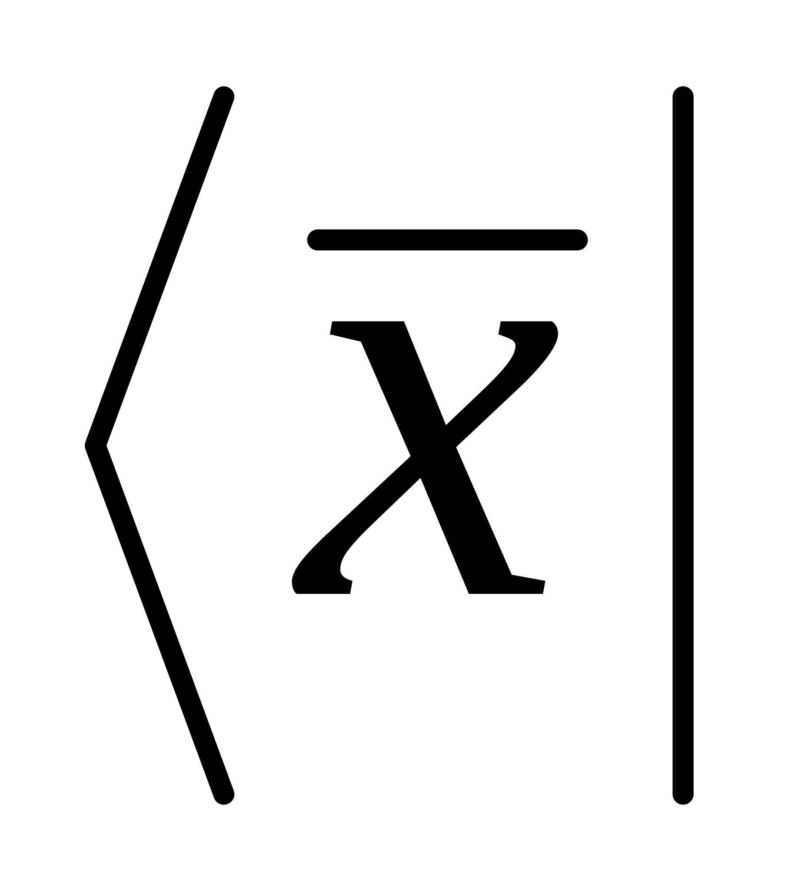
non ha significato, infatti l’autovalore non identifica un unico autostato.
non identifica un unico autostato.
Se vogliamo la probabilità che misurando solo x venga  allora dobbiamo prima calcolare la probabilità
allora dobbiamo prima calcolare la probabilità
e poi calcolare l’integrale

A questo punto scriviamo i principi generalizzati
Un sistema fisico è caratterizzato dalle sue grandezze fisiche che possono essere misurate.
Quando si misura una grandezza g sono possibili diversi risultati, ed ogni risultato ha una certa probabilità di uscire. Se dalla misura si ottiene un particolare risultato , il sistema si porta in uno stato tale che, se si ripete la misura di g si ottiene con certezza il valore  . Un tale stato viene detto autostato di g con autovalore
. Un tale stato viene detto autostato di g con autovalore  .
.
2.bis In generale dato un valore
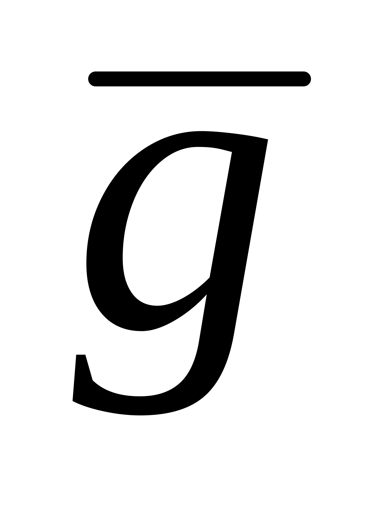
possono esistere infiniti autostati associati a questo valore. Tuttavia è sempre possibile trovare un set di variabili completo , tale che, dati gli n valori
, tale che, dati gli n valori  , esiste un unico autostato simultaneo associato a questi valori.
, esiste un unico autostato simultaneo associato a questi valori.
Un qualsiasi altro stato ( può essere considerato come una sovrapposizione degli autostati simultanei di un set di grandezze  , e può essere rappresentato da un vettore di numeri complessi con n indici
, e può essere rappresentato da un vettore di numeri complessi con n indici  . Ogni numero complesso è associato ad una delle possibili combinazione di valori che può assumere la n-upla di grandezze
. Ogni numero complesso è associato ad una delle possibili combinazione di valori che può assumere la n-upla di grandezze  . Il modulo quadrato di ogni uno di questi numeri complessi, ad esempio
. Il modulo quadrato di ogni uno di questi numeri complessi, ad esempio  , da la probabilità che misurando contemporaneamente le grandezze
, da la probabilità che misurando contemporaneamente le grandezze  escano il particolare set di valori
escano il particolare set di valori  e che il sistema si porti nell’autostato simultaneo
e che il sistema si porti nell’autostato simultaneo
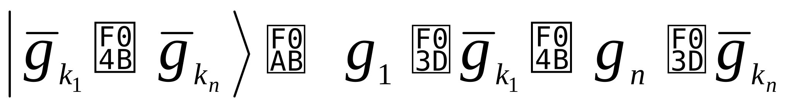
.In generale se il sistema si trova in uno stato ( e si misura contemporaneamente un set completo di grandezze
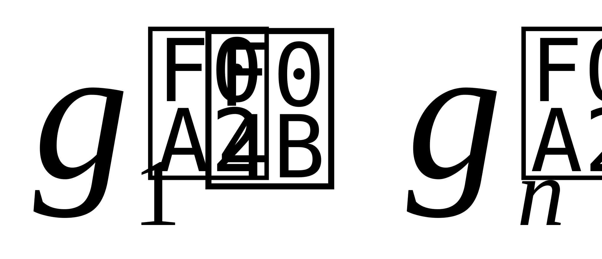
, la probabilità che esca è data dal modulo quadro del prodotto scalare tra il vettore
è data dal modulo quadro del prodotto scalare tra il vettore  ed il vettore associato all’autostato simultaneo
ed il vettore associato all’autostato simultaneo  . Cioè
. Cioè  .
.
L’evoluzione nel tempo di uno stato (t segue una legge lineare 
dove  è una matrice che dipende dal sistema e dalle “condizioni ambientali”. La matrice
è una matrice che dipende dal sistema e dalle “condizioni ambientali”. La matrice  è detta matrice di evoluzione temporale e gode della proprietà di lasciare invariati i prodotti scalari
è detta matrice di evoluzione temporale e gode della proprietà di lasciare invariati i prodotti scalari 
La generalizzazione di questi principi al caso continuo è immediata, basta sostituire alla rappresentazione indiciale  la rappresentazione funzionale
la rappresentazione funzionale
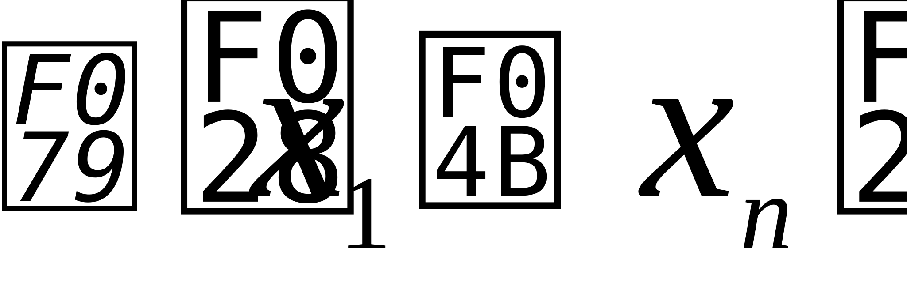
.Osserviamo che due ket  e
e  sono ortogonali, a meno che non abbiano tutti i valori uguali
sono ortogonali, a meno che non abbiano tutti i valori uguali
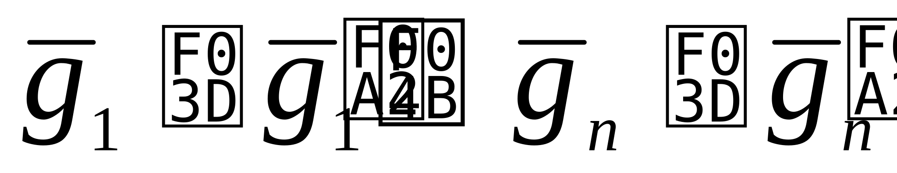
. Infatti se supponiamo che uno dei valori, ad esempio il primo, è diverso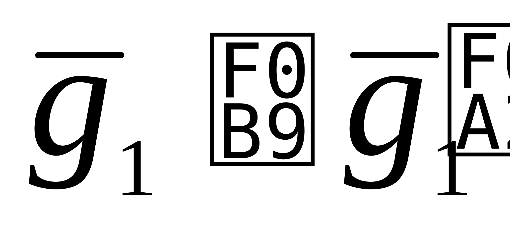
allora abbiamo che la probabilità di ottenere i valori nello stato
nello stato  è zero, dunque:
è zero, dunque:
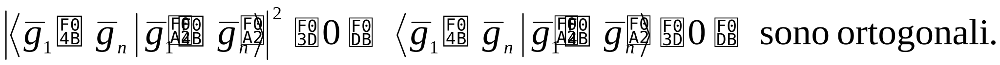
Se i ket  oltre ad essere ortogonali sono anche normalizzati, allora le componenti di un generico ket
oltre ad essere ortogonali sono anche normalizzati, allora le componenti di un generico ket  nella base si potranno scrivere con il prodotto scalare
nella base si potranno scrivere con il prodotto scalare  , quindi avremo
, quindi avremo

Queste identità devono essere vere per ogni scelta del ket  , quindi possiamo dedurre la formula
, quindi possiamo dedurre la formula
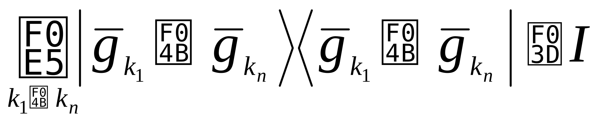
dove con I abbiamo indicato la matrice identità. Questa formula ci sarà utilissima in molte occasioni future.
Ora supponiamo di voler calcolare la distribuzione di ampiezze di probabilità associata ad altre grandezze fisiche diverse dalla posizione, ad esempio la quantità di moto
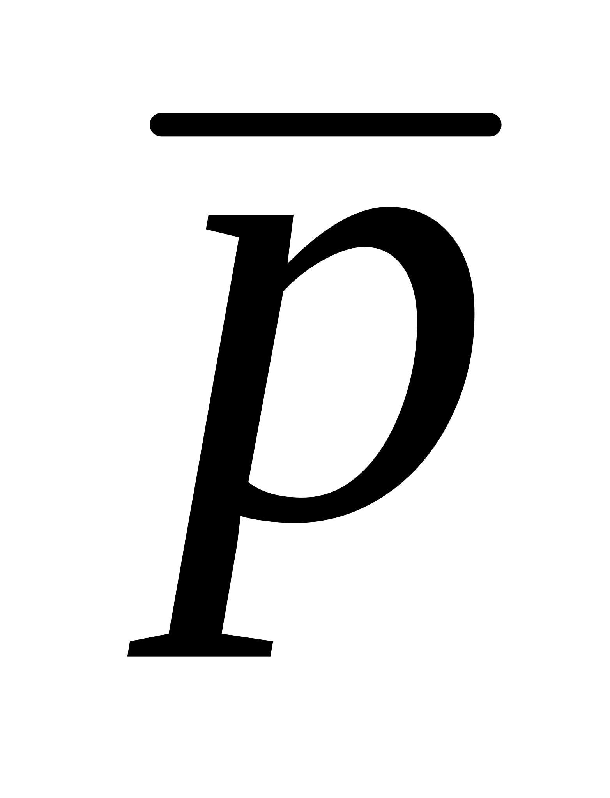
. (D’ora in avanti con i simboli sopralineati indicheremo le grandezze vettoriali).Ampiezze di probabilità per la quantità di moto.
Se conosciamo lo stato di una particella materiale, e conosciamo la distribuzione di ampiezze di probabilità per la variabile posizione
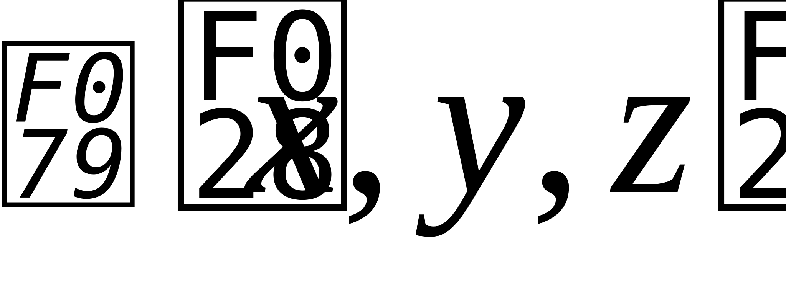
, come possiamo determinare la distribuzione di ampiezze di probabilità per la grandezza quantità di moto?Se conoscessimo gli autostati della quantità di moto allora potremmo applicare il quarto postulato, ma questi autostati non li conosciamo e li dobbiamo determinare.
Per trovare la soluzione al nostro problema dobbiamo prendere l’altro capo della matassa, cioè supponiamo di conoscere quali siano gli autostati della quantità di moto, e da questi cerchiamo di calcolare un valore che già conosciamo per altra via, così potremo avere un legame tra le cose che sappiamo e quelle che non abbiamo ancora determinato.
Supponiamo ad esempio di voler calcolare il valore medio della componente lungo x della quantità di moto
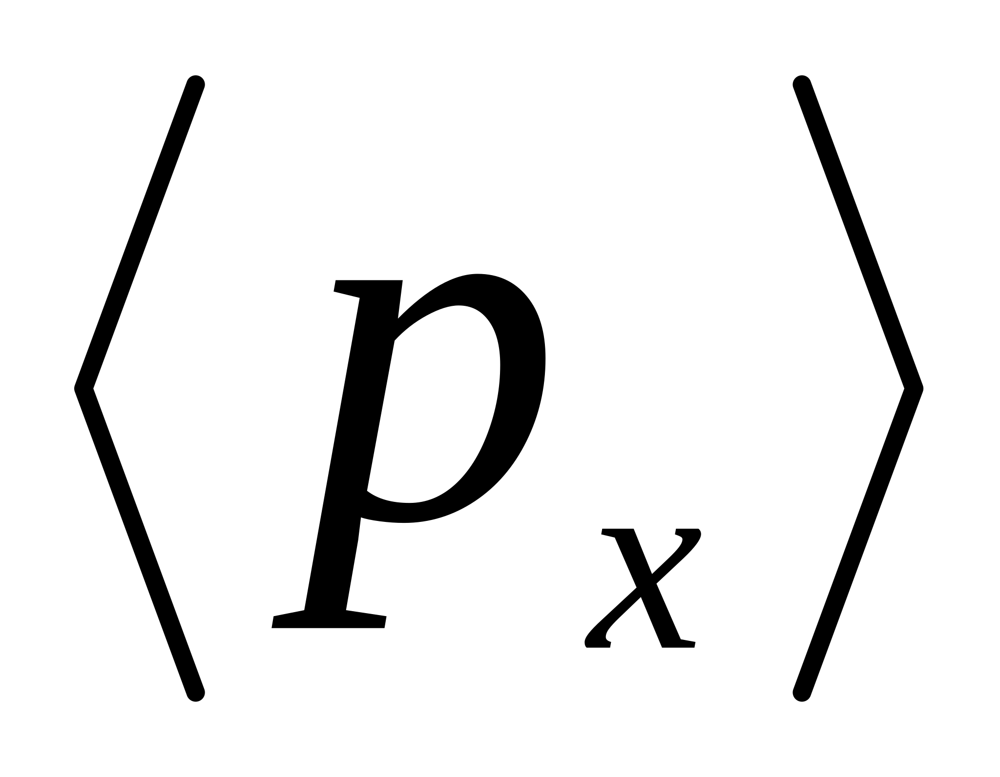
, supponendo di conoscere lo stato del sistema e gli autostati della quantità di moto.
e gli autostati della quantità di moto.
Per mantenere la generalità non possiamo ipotizzare che la grandezza  da sola costituisca un set completo, quindi per “completare il set” introduciamo un insieme di grandezze ausiliarie che indicheremo brevemente con un unico simbolo contratto
da sola costituisca un set completo, quindi per “completare il set” introduciamo un insieme di grandezze ausiliarie che indicheremo brevemente con un unico simbolo contratto  . Per rappresentare un autostato associato ad un autovalore
. Per rappresentare un autostato associato ad un autovalore
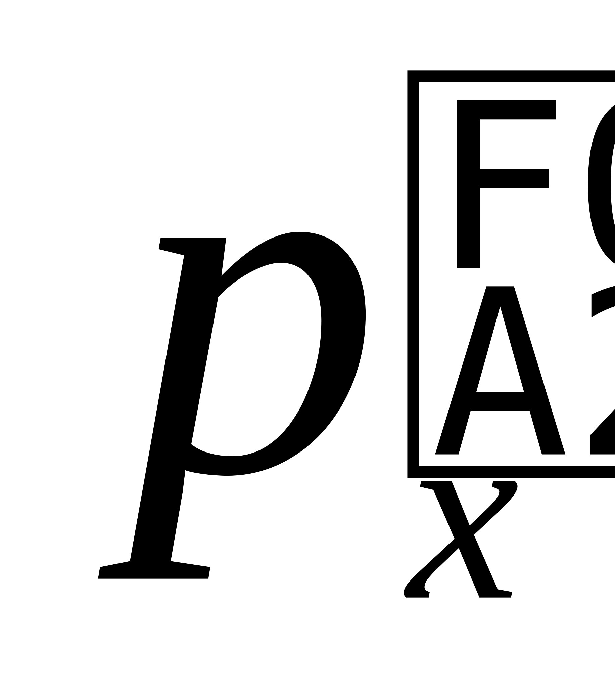
useremo il ket , dove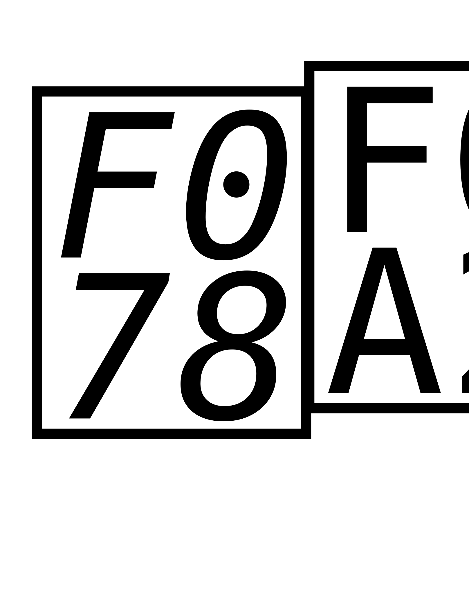
è un multiindice relativo all’insieme delle grandezze ausiliarie .
.
(Nota che sarebbe sbagliato scrivere il ket
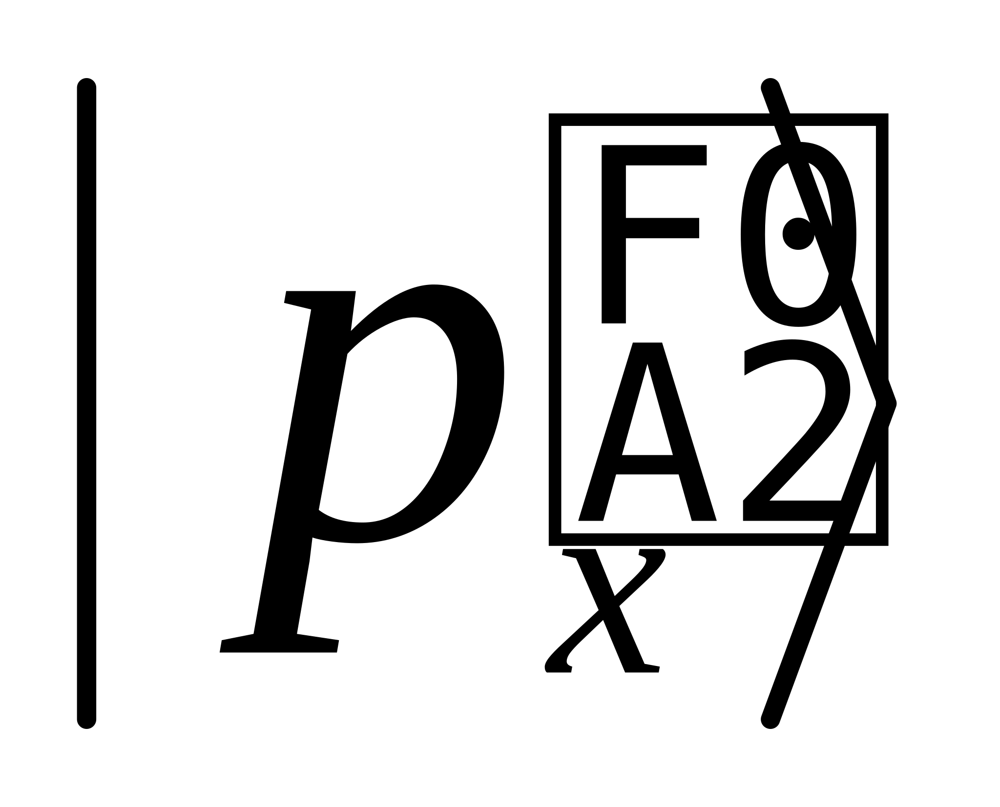
, perchè non è possibile identificare uno stato dando solo il valore assunto dalla grandezza
assunto dalla grandezza  ).
).
In base a queste notazioni possiamo scrivere la probabilità:
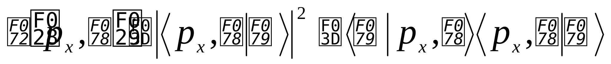
Dove abbiamo indicato la probabilità con il simbolo
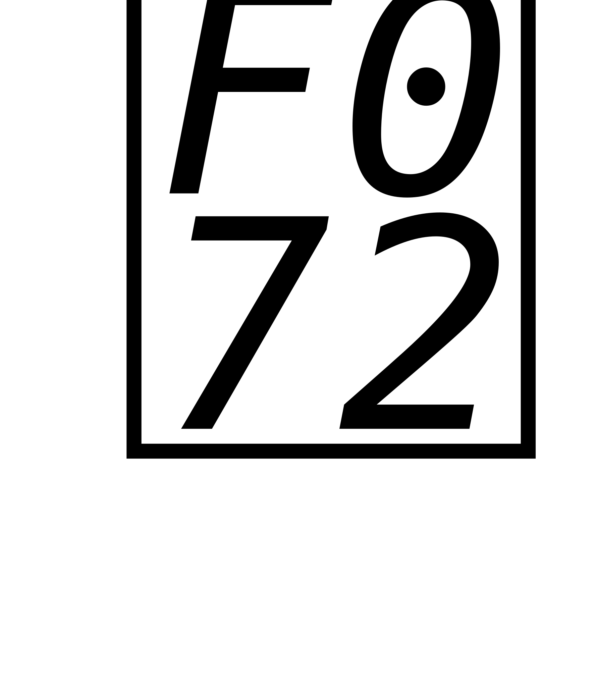
per non creare confusione con la p della quantità di moto.In base a questa formula possiamo calcolare il valore medio:
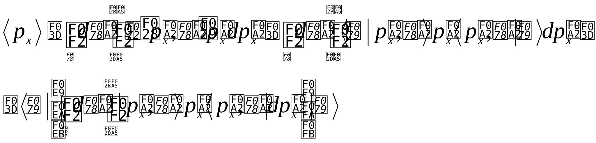
ma noi sappiamo anche che
dove
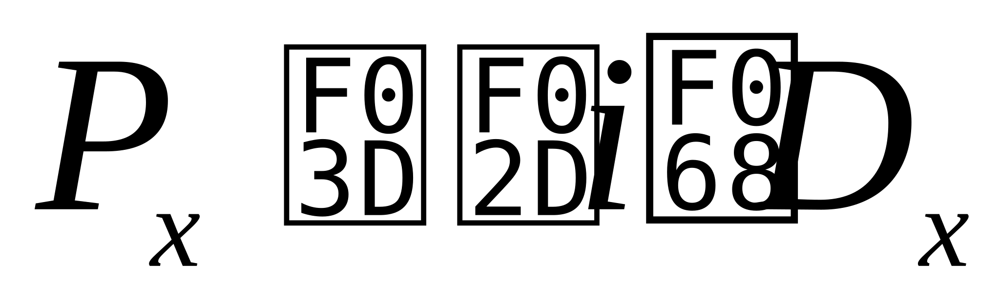
è l’operatore quantità di moto che abbiamo definito nella quarta scheda. In base a queste due uguaglianze possiamo scrivere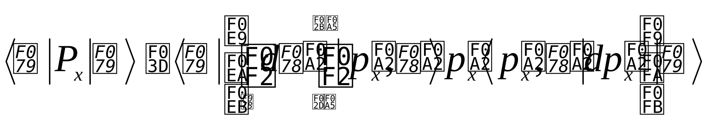
visto che questa equazione è vera per ogni
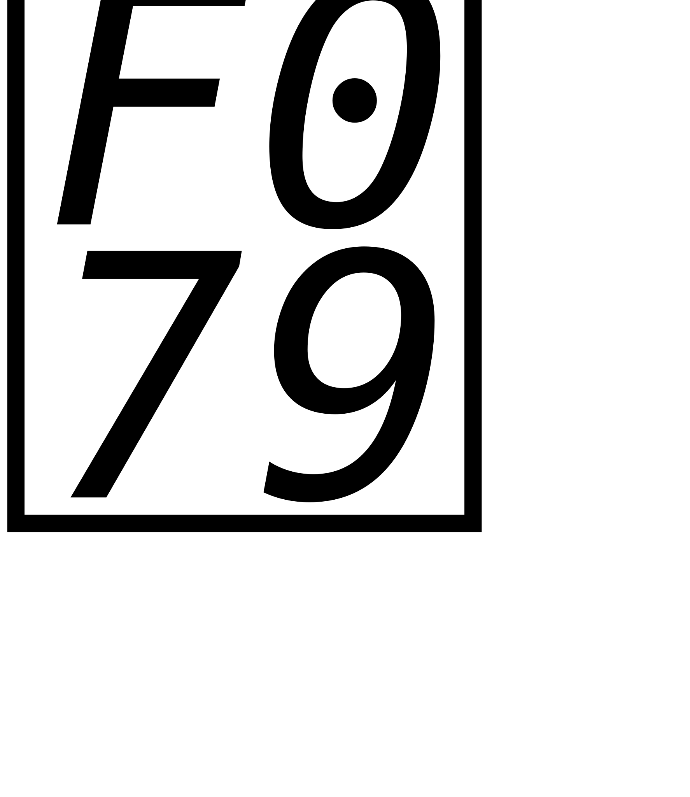
possiamo dedurre che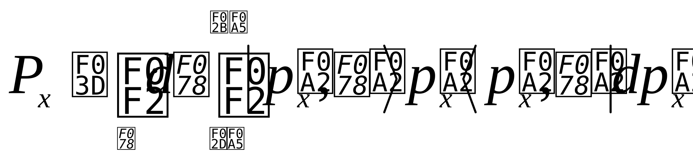
Questa formula ci mostra che l’operatore  “contiene in se” gli autostati che stiamo cercando
“contiene in se” gli autostati che stiamo cercando  , quindi dobbiamo trovare il modo di tirarli fuori.
, quindi dobbiamo trovare il modo di tirarli fuori.
Proviamo a moltiplicare l’operatore  per un autostato
per un autostato  :
:
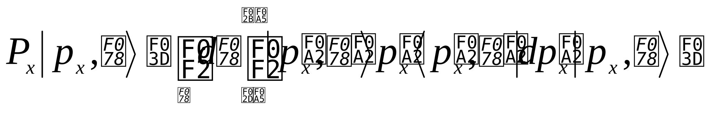
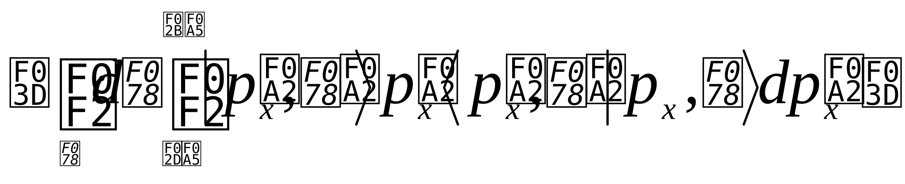
Osservando che  è nullo se
è nullo se
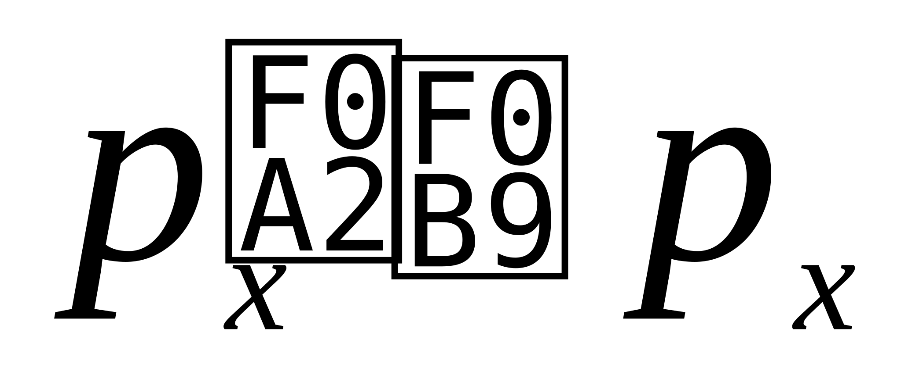
, all’interno dell’integrale possiamo sostituire il termine “centrale” con
con  .
.

essendo  le componenti del vettore
le componenti del vettore  nella base
nella base
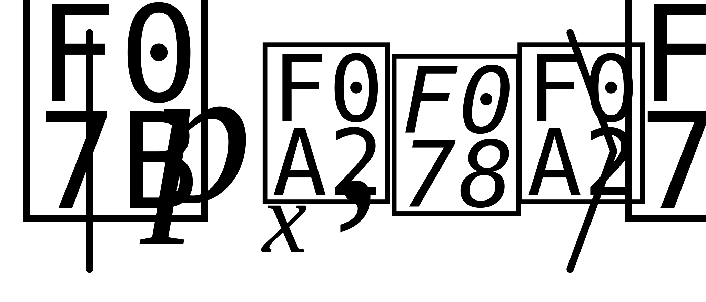
, l’integrale non è altro che la combinazione che esprime il vettore nella base
nella base  , dunque abbiamo trovato
, dunque abbiamo trovato

cioè i vettori di stato sono “autovettori” dell’operatore  . Questo è il motivo per cui gli autostati vengono chiamati così.
. Questo è il motivo per cui gli autostati vengono chiamati così.
A questo punto abbiamo determinato un quadro molto chiaro, alla grandezza osservabile  è associato un operatore
è associato un operatore  , gli autostati della grandezza
, gli autostati della grandezza  sono associati agli autovettori dell’operatore
sono associati agli autovettori dell’operatore  , mentre i valori che può assumere la grandezza
, mentre i valori che può assumere la grandezza  sono gli autovalori dell’operatore
sono gli autovalori dell’operatore  .
.
Se risolviamo il problema agli autovalori
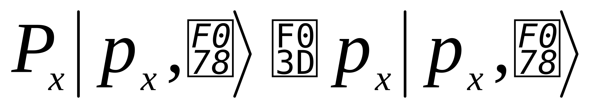
determiniamo gli autostati dell’operatore  ed applicando il postulato quattro riusciamo a risolvere il nostro problema, cioè riusciamo a determinare la distribuzione di probabilità per la quantità di moto.
ed applicando il postulato quattro riusciamo a risolvere il nostro problema, cioè riusciamo a determinare la distribuzione di probabilità per la quantità di moto.
Ora generalizziamo i risultati raggiunti per la quantità di moto con il seguente importantissimo teorema:
Ad ogni grandezza fisica  è associato un operatore hermitiano
è associato un operatore hermitiano  tale che:
tale che:
Il valore medio della grandezza  , quando il sistema si trova in uno stato rappresentato dal ket
, quando il sistema si trova in uno stato rappresentato dal ket  , è dato dalla formula
, è dato dalla formula  ;
;
Gli autovalori dell’operatore
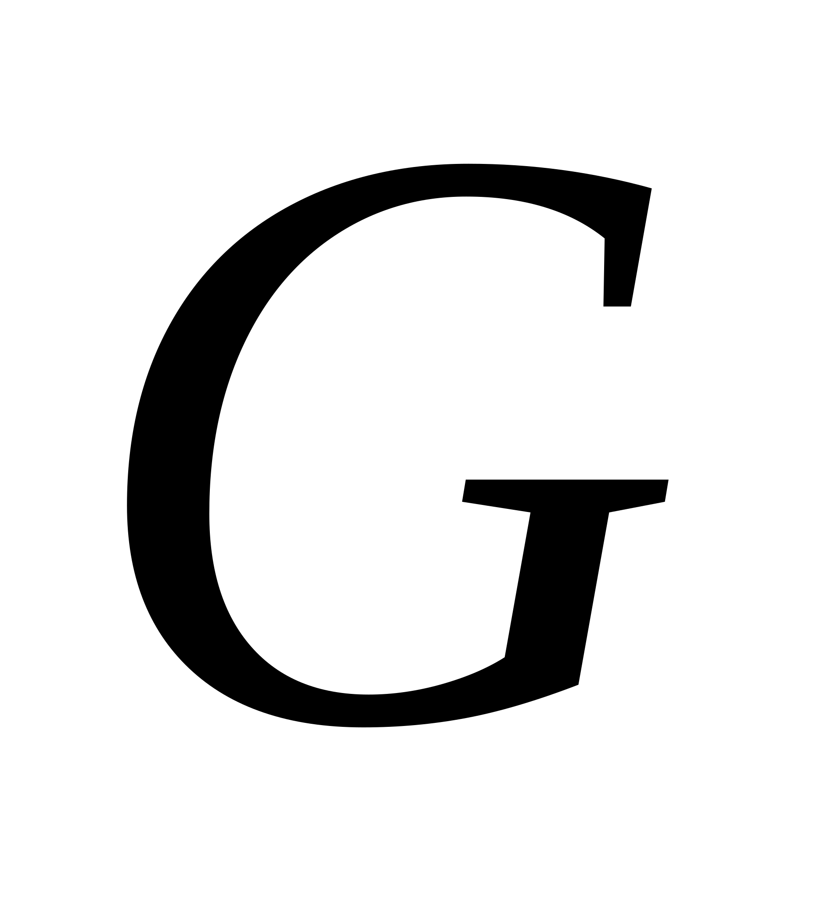
sono tutti i possibili valori che può assumere la grandezza , e gli autovettori associati ad un autovalore
, e gli autovettori associati ad un autovalore  rappresentano gli autostati della grandezza
rappresentano gli autostati della grandezza  nei quali si ottiene con certezza il valore
nei quali si ottiene con certezza il valore 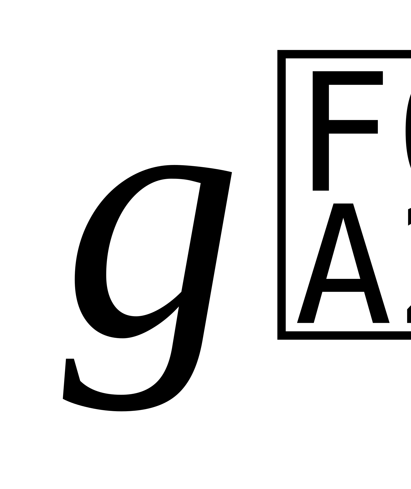
.Dimostrazione:
Consideriamo una grandezza
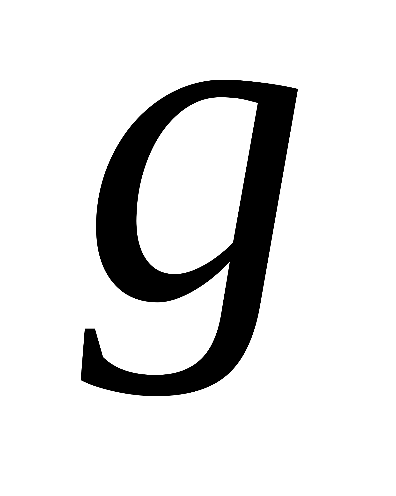
, siano i possibili valori della grandezza
i possibili valori della grandezza  , e siano i ket rappresentativi degli autostati della grandezza
, e siano i ket rappresentativi degli autostati della grandezza  e del set di grandezze ausiliarie
e del set di grandezze ausiliarie  , allora l’operatore
, allora l’operatore
è hermitiano e soddisfa i due punti dell’asserto. Per verificarlo basta seguire esattamente gli stessi passi che abbiamo seguito per l’operatore  .
.
Grandezze compatibili e grandezze incompatibili.
Supponiamo di voler eseguire una misura contemporanea di e di  . Dopo una tale misura il sistema si dovrebbe portare in un autostato simultaneo delle grandezze
. Dopo una tale misura il sistema si dovrebbe portare in un autostato simultaneo delle grandezze  e
e  , ed il ket di stato risultante dovrebbe essere un autoket degli operatori
, ed il ket di stato risultante dovrebbe essere un autoket degli operatori  e , ma questo è impossibile. Infatti indicando con
e , ma questo è impossibile. Infatti indicando con  un ipotetico autostato delle grandezze
un ipotetico autostato delle grandezze  ,
,  e di un opportuno set di grandezze ausiliarie
e di un opportuno set di grandezze ausiliarie  , abbiamo
, abbiamo
da cui

ma noi sappiamo che , dunque abbiamo
Concludiamo che l’autoket simultaneo degli operatori e  non può esistere perché dovrebbe essere per forza nullo. Quindi non può essere possibile eseguire una misura precisa e contemporanea delle grandezze
non può esistere perché dovrebbe essere per forza nullo. Quindi non può essere possibile eseguire una misura precisa e contemporanea delle grandezze  e
e  , mentre invece è perfettamente possibile in altri casi, ad esempio con le grandezze
, mentre invece è perfettamente possibile in altri casi, ad esempio con le grandezze  ,
,  .
.
Prima di procedere con lo studio generalizzare al caso continuo la formula che abbiamo dimostrato alla fine del primo paragrafo:
se  è un insieme completo di grandezze osservabili, e
è un insieme completo di grandezze osservabili, e  è l’insieme ortonormale degli “autoket” associati ai suoi autostati, allora abbiamo
è l’insieme ortonormale degli “autoket” associati ai suoi autostati, allora abbiamo
Per chiarezza ripetiamo la dimostrazione: se moltiplichiamo l’integrale a sinistra per un generico ket  abbiamo
abbiamo

essendo le componenti del vettore  nella base
nella base  abbiamo
abbiamo
che dovendo essere vera per ogni  , prova l’asserto.
, prova l’asserto.
Momento angolare.
Nella Fisica Classica il momento angolare rispetto ad un polo O è definito dalla formula

Nello schema della Meccanica Quantistica la grandezza momento angolare dovrà essere coerente con la definizione classica.
Dunque per i valori medi dovremo avere:

Per semplificare il lavoro ci conviene considerare le singole componenti, inoltre per non appesantire le notazioni ometteremo il pedice O.
Per le componenti abbiamo
Consideriamo la componente . Per avere accordo tra la Meccanica Classica e la Meccanica Quantistica dovremo avere:

Concentriamo l’attenzione sul termine
Indichiamo con un autoket rappresentativo di un autostato simultaneo delle grandezze  , e del set di grandezze ausiliarie
, e del set di grandezze ausiliarie  .
.
Usando questi ket abbiamo
integrando rispetto alle variabili  abbiamo
abbiamo
Quindi per il valore medio abbiamo
ricordando che possiamo scrivere
essendo
abbiamo la formula finale
I passaggi sono analoghi per tutti gli altri termini, quindi otteniamo:
Dunque alla grandezza , per esempio, associamo l’operatore  , e analogamente per le altre.
, e analogamente per le altre.
A questo punto abbiamo trovato un operatore che ci dà una formula per calcolare il valore medio del momento angolare nel formalismo della Meccanica Quantistica e che è in accordo con la formula della Meccanica Classica.
Questo stesso operatore ci può dare tutti i possibili valori che può assumere il momento magnetico e gli autostati corrispondenti; per ottenere queste informazioni basta risolvere il problema agli autovalori
L’energia.
Come ultima grandezza di studio consideriamo l’energia.
Nel formalismo della Meccanica Classica, per una particella carica in un potenziale elettrico, abbiamo l’energia
quindi dobbiamo cercare un operatore che ci dia un valore medio coerente con questa formula classica
Ma noi un operatore simile lo abbiamo già, ed è H, infatti
Quindi se vogliamo trovare i valori che può assumere l’energia, e gli autostati in cui si porta la particella dopo una misura dell’energia, allora dobbiamo risolvere il seguente problema agli autovalori:

Livelli energetici per l’atomo di idrogeno.
L’atomo di idrogeno è costituito da un nucleo con carica pari a quella dell’elettrone, e da un unico elettrone orbitante.
Per determinare il moto dell’elettrone attorno al nucleo si deve risolvere l’equazione si Schrödinger, mentre se si vogliono determinare i valori che può assumere l’energia dell’atomo, basta risolvere il problema agli autovalori che abbiamo posto nel precedente paragrafo nel caso in cui abbiamo un potenziale columbiano .
In questa scheda non vogliamo risolvere questi complicati problemi matematici, e rimandiamo lo svolgimento ad una scheda futura, tuttavia vogliamo anticipare i risultati per i livelli energetici:
L’energia può assumere solo dei valori discreti dati dalla formula